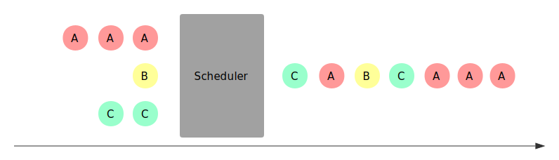
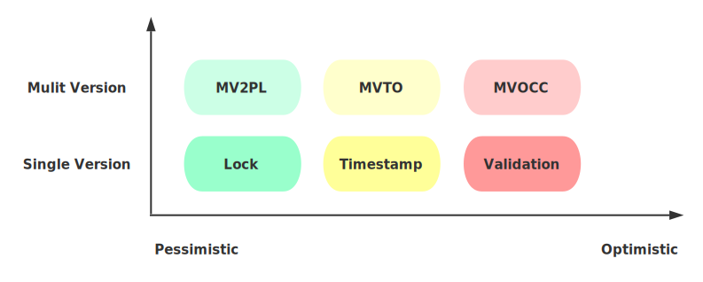
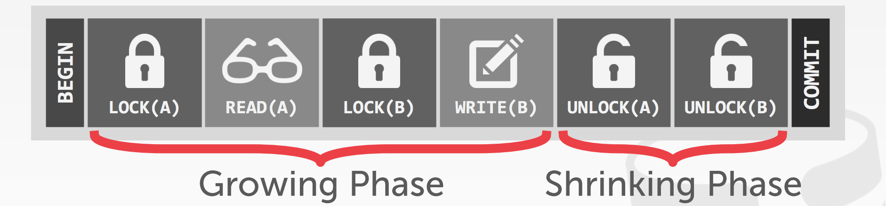
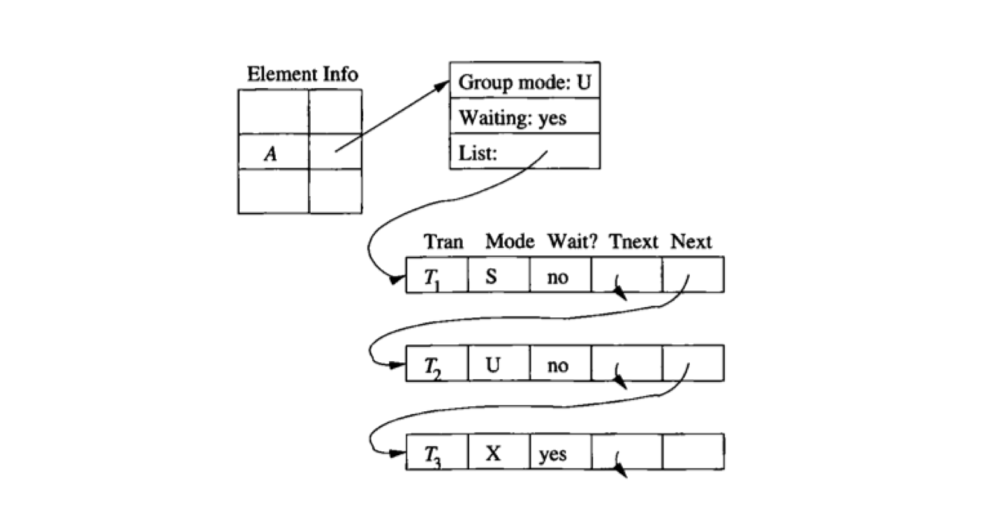
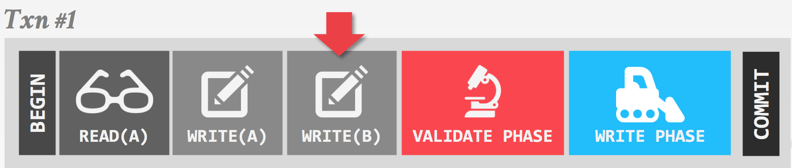
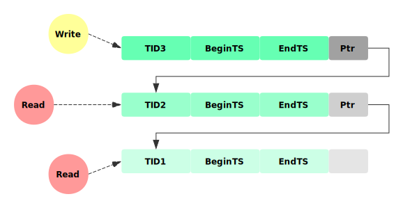

数据库事务隔离发展标准一文中，从标准制定的角度介绍了数据库的隔离级别，介绍了Read Uncommitted、Read Committed、Repeatable Read、Serializable等隔离级别的定义。本文就来看看究竟有哪些常见的实现事务隔离的机制，称之为并发控制（Concurrency Control）。
原理
所谓并发控制，就是保证并发执行的事务在某一隔离级别上的正确执行的机制。需要指出的是并发控制由数据库的调度器负责，事务本身并不感知，如下图所示，Scheduler将多个事务的读写请求，排列为合法的序列，使之依次执行：

这个过程中，对可能破坏数据正确性的冲突事务，调度器可能选择下面两种处理方式：
- Delay：延迟某个事务的执行到合法的时刻
- Abort：直接放弃事务的提交，并回滚该事务可能造成的影响
可以看出Abort比Delay带来更高的成本，接下来我们就介绍不同的并发控制机制在不同情况下的处理方式。
分类

这里从两个维度，对常见的并发控制机制进行分类：
1. 乐观程度
不同的实现机制，基于不同的对发生冲突概率的假设，悲观方式认为只要两个事务访问相同的数据库对象，就一定会发生冲突，因而应该尽早阻止；而乐观的方式认为，冲突发生的概率不大，因此会延后处理冲突的时机。如上图横坐标所示，乐观程度从左向右增高：
- 基于Lock：最悲观的实现，需要在操作开始前，甚至是事务开始前，对要访问的数据库对象加锁，对冲突操作Delay；
- 基于Timestamp：乐观的实现，每个事务在开始时获得全局递增的时间戳，期望按照开始时的时间戳依次执行，在操作数据库对象时检查冲突并选择Delay或者Abort；
- 基于Validation：更乐观的实现，仅在Commit前进行Validate，对冲突的事务Abort
可以看出，不同乐观程度的机制本质的区别在于，检查或预判冲突的时机，Lock在事务开始时，Timestamp在操作进行时，而Validation在最终Commit前。相对于悲观的方式，乐观机制可以获得更高的并发度，而一旦冲突发生，Abort事务也会比Delay带来更大的开销。
2. 单版本 VS 多版本
如上图纵坐标所示，相同的乐观程度下，还存在多版本的实现。所谓多版本，就是在每次需要对数据库对象修改时，生成新的数据版本，每个对象的多个版本共存。读请求可以直接访问对应版本的数据，从而避免读写事务和只读事务的相互阻塞。当然多版本也会带来对不同版本的维护成本，如需要垃圾回收机制来释放不被任何事物可见的版本。
需要指出的是这些并发控制机制并不与具体的隔离级别绑定，通过冲突判断的不同规则，可以实现不同强度的隔离级别，下面基于Serializable具体介绍每种机制的实现方式。
基于Lock
基于Lock实现的Scheduler需要在事务访问数据前加上必要的锁保护，为了提高并发，会根据实际访问情况分配不同模式的锁，常见的有读写锁，更新锁等。最简单地，需要长期持有锁到事务结束，为了尽可能的在保证正确性的基础上提高并行度，数据库中常用的加锁方式称为两阶段锁（2PL），Growing阶段可以申请加锁，Shrinking阶段只能释放，即在第一次释放锁之后不能再有任何加锁请求。需要注意的是2PL并不能解决死锁的问题，因此还需要有死锁检测及处理的机制，通常是选择死锁的事务进行Abort。

Scheduler对冲突的判断还需要配合Lock Table，如下图所示是一个可能得Lock Table信息示意，每一个被访问的数据库对象都会在Lock Table中有对应的表项，其中记录了当前最高的持有锁的模式、是否有事务在Delay、以及持有或等待对应锁的事务链表；同时对链表中的每个事务记录其事务ID，请求锁的模式以及是否已经持有该锁。Scheduler会在加锁请求到来时，通过查找Lock Table判断能否加锁或是Delay，如果Delay需要插入到链表中。对应的当事务Commit或Abort后需要对其持有的锁进行释放，并按照不同的策略唤醒等待队列中Delay的事务。

基于Timestamp
基于Timestamp的Scheduler会在事务开始时候分配一个全局自增的Timestamp，这个Timestamp通常由物理时间戳或系统维护的自增id产生，用于区分事务开始的先后。同时，每个数据库对象需要增加一些额外的信息，这些信息会由对应的事务在访问后更新，包括:
- RT(X): 最大的读事务的Timestamp
- WT(X): 最大的写事务的Timestamp
- C(X): 最新修改的事务是否已经提交
基于Timestamp假设开始时Timestamp的顺序就是事务执行的顺序，当事务访问数据库对象时，通过对比事务自己的Timestamp和该对象的信息，可以发现与这种与开始顺序不一致的情况，并作出应对：
- Read Late：比自己Timestamp晚的事务在自己想要Read之前对该数据进行了写入，并修改了WT(X)，此时会Read不一致的数据。
- Write Late: 比自己Timestamp晚的事务在自己想要Write之前读取了该数据，并修改了RT(X)，如果继续写入会导致对方读到不一致数据。
这两种情况都是由于实际访问数据的顺序与开始顺序不同导致的，Scheduler需要对冲突的事务进行Abort。
- Read Dirty：通过对比C(X)，可以发现是否看到的是已经Commit的数据，如果需要保证Read Commit，则需要Delay事务到对方Commit之后再进行提交。
基于Validation（OCC）
基于Validation的方式，有时也称为Optimistic Concurrency Control(OCC)，大概是因为它比基于Timestamp的方式要更加的乐观，将冲突检测推迟到Commit前才进行。不同于Timestamp方式记录每个对象的读写时间，Validation的方式记录的是每个事物的读写操作集合。并将事物划分为三个阶段：
- Read阶段：从数据库中读取数据并在私有空间完成写操作，这个时候其实并没有实际写入数据库。维护当前事务的读写集合，RS、WS；
- Validate阶段：对比当前事务与其他有时间重叠的事务的读写集合，判断能否提交；
- Write阶段：若Validate成功，进入Write阶段，这里才真正写入数据库。

同时，Scheduler会记录每个事务的开始时间START(T)，验证时间VAL(T)，完成写入时间FIN(T)
基于Validataion的方式假设事务Validation的顺序就是事务执行的顺序，因此验证的时候需要检查访问数据顺序可能得不一致：
- RS(T)和WS(U) 是否有交集，对任何事务U，FIN(U) > START(T)，如果有交集，则T的读可能与U的写乱序；
- WS(T)和WS({U) 是否有交集，对任何事务U， Fin(U) > VAL(T)，如果有交集，则T的写可能与U的写乱序。
Multiversion（MVCC）
对应上述每种乐观程度，都可以有多版本的实现方式，多版本的优势在于，可以让读写事务与只读事务互不干扰，因而获得更好的并行度，也正是由于这一点成为几乎所有主流数据库的选择。为了实现多版本的并发控制，需要给每个事务在开始时分配一个唯一标识TID，并对数据库对象增加以下信息：
- txd-id，创建该版本的事务TID
- begin-ts及end-ts分别记录该版本创建和过期时的事务TID
- pointer: 指向该对象其他版本的链表

其基本的实现思路是，每次对数据库对象的写操作都生成一个新的版本，用自己的TID标记新版本begin-ts及上一个版本的end-ts，并将自己加入链表。读操作对比自己的TID与数据版本的begin-ts，end-ts，找到其可见最新的版本进行访问。根据乐观程度多版本的机制也分为三类：
1. Two-phase Locking (MV2PL)
与单版本的2PL方式类似，同样需要Lock Table跟踪当前的加锁及等待信息，另外给数据库对象增加了多版本需要的begin-ts和end-ts信息。写操作需要对最新的版本加写锁，并生成新的数据版本。读操作对找到的最新的可见版本加读锁访问。
2. Timestamp Ordering (MVTO)
对比单版本的Timestamp方式对每个数据库对象记录的Read TimeStamp(RT)，Write TimeStamp(WT)，Commited flag(C)信息外增加了标识版本的begin-ts和end-ts，同样在事务开始前获得唯一递增的Start TimeStamp（TS），写事务需要对比自己的TS和可见最新版本的RT来验证顺序，写入是创建新版本，并用自己的TS标记新版本的WT，不同于单版本，这个WT信息永不改变。读请求读取自己可见的最新版本，并在访问后修改对应版本的RT，同样通过判断C flag信息避免Read Uncommitted。
3. Optimistic Concurrency Control (MVOCC)
对比单版本的Validataion（OCC）方式，同样分为三个阶段，Read阶段根据begin-ts，end-ts找到可见最新版本，不同的是在多版本下Read阶段的写操作不在私有空间完成，而是直接生成新的版本，并在其之上进行操作，由于其commit前begin-ts为INF，所以不被其他事务课件；Validation阶段分配新的Commit TID，并以之判断是否可以提交；通过Validation的事务进入Write阶段将begin-ts修改为Commit TID。
总结
相对于悲观的锁实现，乐观的机制可以在冲突发生较少的情况下获得更好的并发效果，然而一旦冲突，需要事务回滚带来的开销要远大于悲观实现的阻塞，因此他们各自适应于不同的场景。而多版本由于避免读写事务与只读事务的互相阻塞， 在大多数数据库场景下都可以取得很好的并发效果，因此被大多数主流数据库采用。可以看出无论是乐观悲观的选择，多版本的实现，读写锁，两阶段锁等各种并发控制的机制，归根接地都是在确定的隔离级别上尽可能的提高系统吞吐，可以说隔离级别选择决定上限，而并发控制实现决定下限。
本文从乐观悲观的程度以及单版本多版本选择上对可用的并发控制机制选择进行了划分，并介绍了各种机制大体的设计思路，而距离真正的实现还有比较大的距离，包括实现细节和配套机制。比如常用的各种类型的MVCC中，由于多版本的存在而带来的一些列如垃圾回收、索引管理、版本存储等相关问题。我们之后将以MyRocks为例看看并发控制在工程上的具体实现。